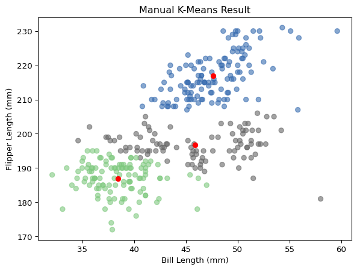
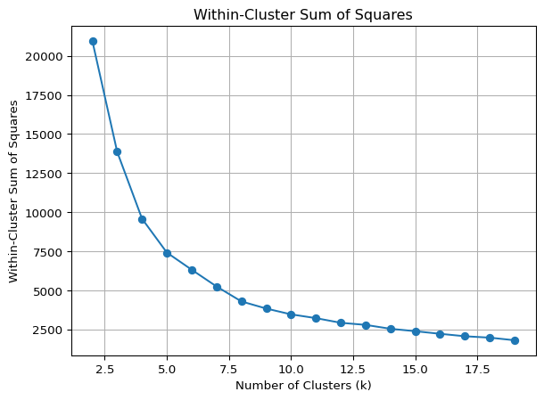
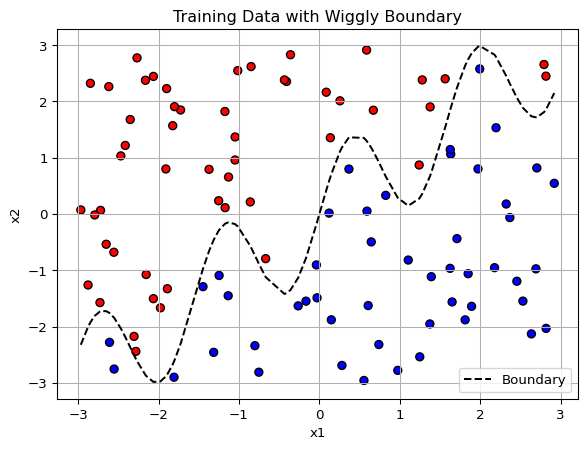
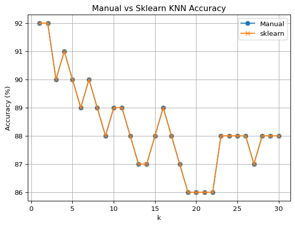

import numpy as np
import pandas as pd
import matplotlib.pyplot as plt
from scipy.spatial.distance import cdist
def manual_kmeans(arr, k=3, iter=5, rand_seed=42):
np.random.seed(rand_seed)
centroids = arr[np.random.choice(arr.shape[0], k, replace=False)]
for n in range(iter):
distances = cdist(arr, centroids)
labels = np.argmin(distances, axis=1)
for i in range(k):
centroids[i] = arr[labels == i].mean(axis=0)
plt.scatter(
arr[:, 0], arr[:, 1],
c=labels, cmap='Accent', alpha=0.6)
plt.scatter(
centroids[:, 0], centroids[:, 1],
color='red', marker='o')
plt.xlabel("Bill Length (mm)")
plt.ylabel("Flipper Length (mm)")
plt.title("Manual K-Means Result")
plt.show()
penguins = pd.read_csv('data/palmer_penguins.csv')
quack = penguins.loc[:,['bill_length_mm', 'flipper_length_mm']].dropna().valuesRage Against The Machine Learning
School
MGTA495
Introduction
Below, I will demonstrate two forms of machine learning, one unsupervised - K-means, and one supervised - K Nearest Neighbors.
K-Means
K-means is an unsupervised clustering algorithm that partitions data into k groups by minimizing the distance between points and their assigned cluster centroids.
Using a dataset on penguin feature measurements, I will demonstrate this process with a manual Python implementation that iteratively updates centroids to form well-separated clusters.
As the number of iterations increases, we can see the centroids moving toward their optimal positions and the clusters shifting, eventually stabilizing.

For comparison, I will run this dataset through scikit-learn’s built-in K-means function.
from sklearn.cluster import KMeans
from sklearn.metrics import silhouette_score
kmeans = KMeans(n_clusters=3, n_init=15, random_state=42)
kmeans.fit(quack)
labels = kmeans.labels_
centroids = kmeans.cluster_centers_
plt.scatter(
quack[:, 0], quack[:, 1],
c=labels, cmap='Accent', alpha=0.6)
plt.scatter(
centroids[:, 0], centroids[:, 1],
color='red', marker='o')
plt.xlabel("Bill Length (mm)")
plt.ylabel("Flipper Length (mm)")
plt.title("Built-in KMeans Result")
plt.show()In my prior examples, I have chosen to segment the data into k=3 clusters, but this may not be optimal. To assess the number of clusters, we can perform two tests: Within-Cluster Sum of Squares and Silhouette Scores.
Within-Cluster Sum of Squares
A low Within-Cluster Sum of Squares (WCSS) is good, indicating that the points in a cluster are close to their centroid. However, as the number of clusters (k) increases, the WCSS will always decrease until eventually reaching zero at k = the number of data points. Of course, having that many clusters is not useful or informative. In the plot below, the WCSS drops sharply at first, then levels off. The “elbow” in the curve, where the rate of improvement slows, appears between k = 3 and k = 6, suggesting a good range for the optimal number of clusters.
wcss = []
silhouette = []
K_range = range(2, 20)
for k in K_range:
kmeans = KMeans(n_clusters=k, n_init=10, random_state=42)
labels = kmeans.fit_predict(quack)
wcss.append(kmeans.inertia_)
silhouette.append(silhouette_score(quack, labels))
plt.plot(K_range, wcss, marker='o')
plt.title("Within-Cluster Sum of Squares")
plt.xlabel("Number of Clusters (k)")
plt.ylabel("Within-Cluster Sum of Squares")
plt.grid(True)
plt.show()
Silhouette Scores
In contrast to WCSS, silhouette scores evaluate a point’s proximity to other points within its cluster as well as to points in other clusters. The closer it is to points in its own cluster and the farther it is from other clusters, the higher the score. Unlike WCSS, increasing the number of clusters does not always lead to better scores — too many clusters can create tightly packed, less meaningful groupings.
plt.plot(K_range, silhouette, marker='o', color='green')
plt.title("Silhouette Scores")
plt.xlabel("Number of Clusters (k)")
plt.ylabel("Silhouette Score")
plt.grid(True)
plt.show()
Comparing the two measurements, it appears that k = 2 or k = 3 may be optimal. These values significantly reduce WCSS before the silhouette score drops more noticeably at higher values of k.
K Nearest Neighbors
K-nearest neighbors (KNN) is a simple, non-parametric classification algorithm that predicts a point’s label based on the majority label of its closest k neighbors in the training data.
We will first create a synthetic dataset with two input features (x1, x2) and a binary outcome y, which is based on whether a point lies above or below a nonlinear “wiggly” boundary. We’ll use this to train the KNN model.
np.random.seed(42)
n = 100
x1 = np.random.uniform(-3, 3, n)
x2 = np.random.uniform(-3, 3, n)
boundary = np.sin(4 * x1) + x1
y = (x2 > boundary).astype(int)
train = pd.DataFrame({'x1': x1, 'x2': x2, 'y': y})
plt.scatter(train['x1'], train['x2'], c=train['y'], cmap='bwr', edgecolor='k')
plt.plot(np.sort(x1), np.sin(4 * np.sort(x1)) + np.sort(x1), color='black', linestyle='--', label='Boundary')
plt.xlabel('x1')
plt.ylabel('x2')
plt.title('Training Data with Wiggly Boundary')
plt.legend()
plt.grid(True)
plt.show()
Here, the training data is visualized in 2D space. Points are colored by class (y), and the wiggly decision boundary is shown as a dashed line for reference.
Below, a second synthetic dataset is generated using a different random seed. This test set follows the same logic as the training set and will be used to evaluate model accuracy.
np.random.seed(99)
x1_test = np.random.uniform(-3, 3, n)
x2_test = np.random.uniform(-3, 3, n)
boundary_test = np.sin(4 * x1_test) + x1_test
y_test = (x2_test > boundary_test).astype(int)
test = pd.DataFrame({'x1': x1_test, 'x2': x2_test, 'y': y_test})This section defines a manual version of the K-nearest neighbors classifier. For each value of k from 1 to 30, we predict labels for the test set and compute the classification accuracy. The resulting plot shows how the accuracy of the manual KNN classifier changes with different values of k. This helps us identify which value of k gives the best test performance.
def euclidean(a, b):
return np.sqrt(np.sum((a - b) ** 2, axis=1))
def knn_predict(X_train, y_train, X_test, k):
preds = []
for point in X_test:
dists = euclidean(X_train, point)
nearest = y_train[np.argsort(dists)[:k]]
pred = np.round(np.mean(nearest)).astype(int) # majority vote
preds.append(pred)
return np.array(preds)
X_train = train[['x1', 'x2']].to_numpy()
y_train = train['y'].to_numpy()
X_test = test[['x1', 'x2']].to_numpy()
y_true = test['y'].to_numpy()
accuracies = []
for k in range(1, 31):
y_pred = knn_predict(X_train, y_train, X_test, k)
acc = np.mean(y_pred == y_true)
accuracies.append(acc)
plt.plot(range(1, 31), [a * 100 for a in accuracies], marker='o')
plt.title("KNN Accuracy on Test Set")
plt.xlabel("k (number of neighbors)")
plt.ylabel("Accuracy (%)")
plt.grid(True)
plt.show()The same evaluation is repeated, using scikit-learn’s built-in KNN function, serving as a check to confirm the manual implementation.
from sklearn.neighbors import KNeighborsClassifier
accuracies_sklearn = []
for k in range(1, 31):
model = KNeighborsClassifier(n_neighbors=k)
model.fit(X_train, y_train)
y_pred = model.predict(X_test)
acc = np.mean(y_pred == y_true)
accuracies_sklearn.append(acc)
plt.plot(range(1, 31), [a * 100 for a in accuracies], label='Manual', marker='o')
plt.plot(range(1, 31), [a * 100 for a in accuracies_sklearn], label='sklearn', marker='x')
plt.title("Manual vs Sklearn KNN Accuracy")
plt.xlabel("k")
plt.ylabel("Accuracy (%)")
plt.legend()
plt.grid(True)
plt.show()
In this case, the highest accuracy was achieved with k = 1 or 2, and accuracy declined as k increased, suggesting that a small number of neighbors gives the best classification performance for this dataset.